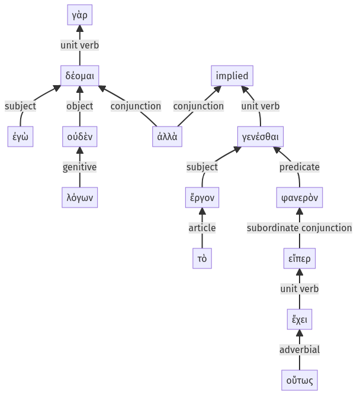

Lysias, Oration 1, 1.21.28-1.21.40a
1.21.20-1.21.27a | 1.22.1-1.22.3a
Sentence 56
1.21.28-1.21.40a
ἐγὼ γὰρ οὐδὲν δέομαι λόγων, ἀλλὰ τὸ ἔργον φανερὸν γενέσθαι, εἴπερ οὕτως ἔχει".
1 ἐγὼ οὐδὲν δέομαι λόγων
1 ἀλλὰ
2 τὸ ἔργον φανερὸν γενέσθαι
3 εἴπερ οὕτως ἔχει
ἐγὼ γὰρ οὐδὲν δέομαι λόγων, ἀλλὰ τὸ ἔργον φανερὸν γενέσθαι, εἴπερ οὕτως ἔχει".
Highlighting:
- connecting words
- unit verb
- subject
- object
Color code:
- Independent clause (level 1, transitive verb)
- Indirect speech with infinitive (level 2, transitive verb)
- Independent (level 1, transitive verb)
- subordinate clause (level 3, transitive verb)
